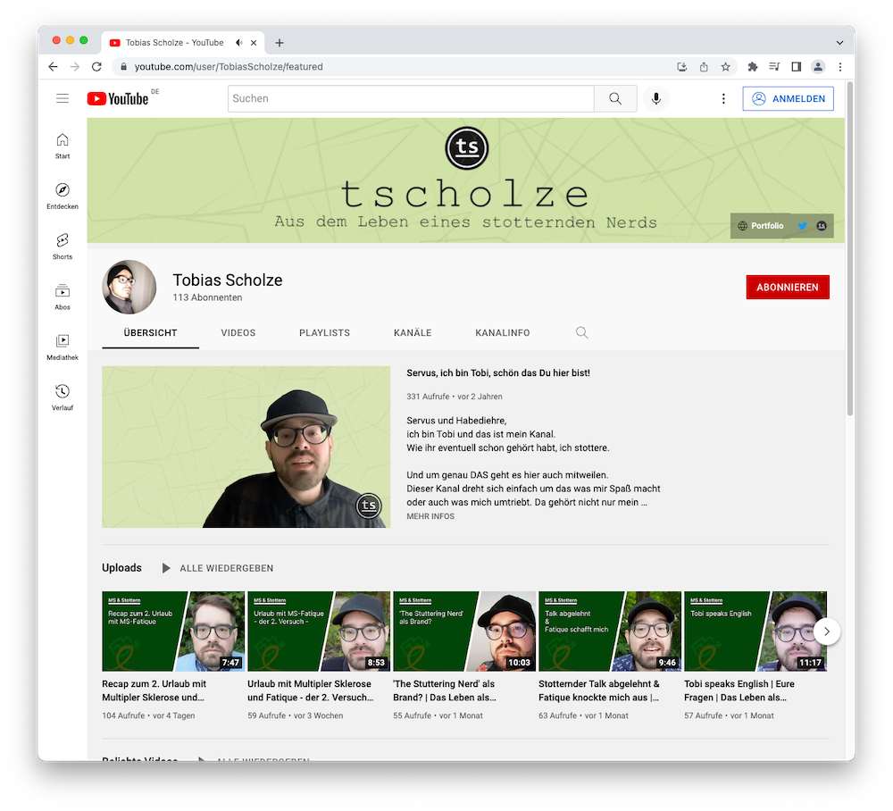

Ich möchte es einfach einmal hier festhalten, ohne darauf direkt zu reagieren, dies folgt in einem weiteren Video. Mein YouTube Experiment hat nun über 1000 Videoansichten und 30(!) Subscriber.

Vor wenigen Monaten habe ich ein Video zum Fazit nach “14 Abonnementen und 10 Videos” gemacht. Es ist super zu sehen, dass sich seitdem die Zahl verdoppelt hat und für mich vieeel wichtiger, ich sehr viele interessante Gespräche mit den unterschiedlichsten Menschen über die Thematik des Stotterns geführt habe. <3
Danke für all dies! Dennoch bleibe ich dabei, dass dies alles ein Experiment ist um mich mit meinem Sprachfehler selber besser akzeptieren zu können. Denn, wenn man sich nicht selbst mag, wie sollen es dann andere können?
Zurück